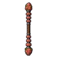
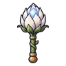
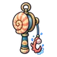

หุ่นไร้หน้า
มอนธาตุไม่มีธาตุ Lv 88–96
เจอที่
| แมพ | โซน | Lv | ภูมิภาค |
|---|---|---|---|
| ป่าใต้ที่มืดสนิท | แคมป์ที่ไฟดับ | 94–96 | ป่ากองไฟ |
| โรงหุ่นใต้วิหาร ชั้น 1 · ห้องขัง | 88–90 | เมืองหอระฆัง | |
| โรงหุ่นใต้วิหาร ชั้น 1 · ห้องขัง | 89–91 | เมืองหอระฆัง | |
| โรงหุ่นใต้วิหาร ชั้น 2 · โต๊ะช่าง | 91–94 | เมืองหอระฆัง | |
| ป่ารากดำ | 88–96 | ป่ากองไฟ | |
| หอรากมืด (Dark Root) | คณะประสานเสียงเงียบ | 62–71 | |
| หอรากมืด (Dark Root) | หัวใจต้นไม้มืด | 90–99 |
ค่าสถานะตามเลเวล
| Lv | HP | ATK | DEF | MDEF | EXP | Job |
|---|---|---|---|---|---|---|
| 88 | 76,906 | 231–346 | 42 | 21 | 128 | 96 |
| 92 | 87,208 | 247–370 | 44 | 22 | 133 | 100 |
| 96 | 97,627 | 265–398 | 46 | 23 | 139 | 104 |
ตีด้วยธาตุไหนดี
แรงขึ้น: —
เบาลง: วิญญาณ ×0.25
วัตถุดิบที่ดรอป
| ของ | โอกาส | |
|---|---|---|
| ข้อต่อไม้หุ่น | 55% | 1 ชิ้น (15% ได้ 2) |
อุปกรณ์ที่ดรอป (11)
| ของ | โอกาส |
|---|---|
| 0.25% | |
| 0.25% | |
| ชุดผู้ฝึกเหยี่ยว (เสื้อ) | 0.15% |
| ชุดผู้ฝึกเหยี่ยว (กางเกง + รองเท้า) | 0.15% |
| ชุดแมวผี (เสื้อ) | 0.15% |
| ชุดแมวผี (กางเกง + รองเท้า) | 0.15% |
 ไม้พลองหินโกเลมซ้อน | 0.12% |
 กระบองดอกราตรี | 0.06% |
 ด้ายเหล็กเปลือกหอยทะเล | 0.06% |
| ชุดผู้ฝึกเหยี่ยว (ขนเหยี่ยวผูกกระดิ่ง) | 0.05% |
| ชุดแมวผี (กระดิ่งวิญญาณ) | 0.05% |
สกิล
ดึง (Lv 25+) · ดึง (Lv 60+) · ทุบพื้น (Lv 60+)